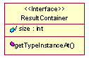
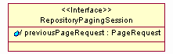
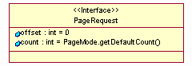
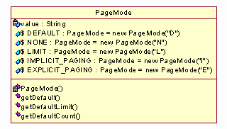
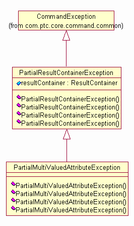
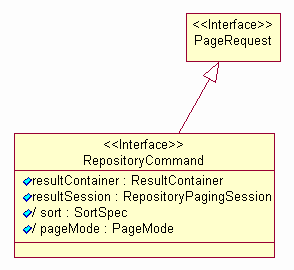
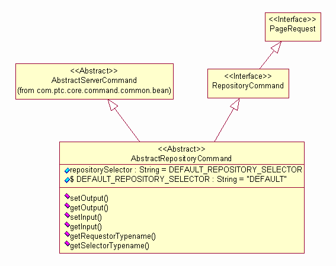
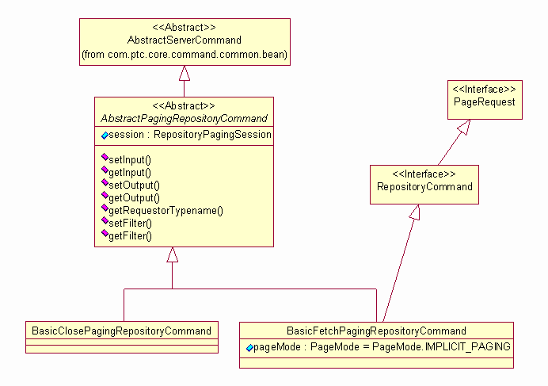

| Interface | Description |
|---|---|
| PageRequest |
This interface specifies the parameters assocatied with a paging request.
|
| RepositoryCommand |
This interface specifies a command for retrieving data results from a
repository of data.
|
| RepositoryPagingSession |
This interface represents the concept of a PagingSession over items in
a repository.
|
| ResultContainer |
This interface provides the abstraction for the results of a type based
query.
|
| Class | Description |
|---|---|
| AbstractPagingRepositoryCommand |
This class provides an abstration for commands involving a PagingSession.
|
| AbstractRepositoryCommand |
This is an abstract representation of a command that can act upon a repository
in the system.
|
| BasicClosePagingRepositoryCommand |
This command closes a Paging Session.
|
| BasicFetchPagingRepositoryCommand |
This command fetches a page of result data from an existing Paging Session.
|
| PageMode |
This class defines the modes of paging.
|
| PartialMultiValuedAttributeException |
This Exception indicates that mulit-valued attributes in the results
are not complete.
|
| PartialResultContainerException |
This Exception indicates that the repository retrieve operation results
are not complete due to some processing error.
|
Describes the commands for queries of data in a repository. Data can be stored and accessed in a variety of ways. A repository is a specific instance of a data storage mechanism. The Repository Command beans provide access to the data stored in one or more repositories.
Repository Parameters
The following are input and output parameters used by Repository Command beans.
Outputs

The ResultContainer provides access to the TypeInstances returned by executing a Repository Command.

Some repositories support the notion of paging. Data from a query can be returned by multiple page or fetch requests. The RepositoryPagingSession is an interface for identifying a paging session over multiple requests. The previous PageRequest attribute is needed to support paging modes where the next sequential page is autmatically requested.
Inputs

A PageRequest specifies parameters for accessing items from the result set.

The PageMode represents the various types of paging that repositories may support. Not all repositories are required to support all of these paging modes.
Exceptions
Repository Commands have some specific exceptions that can be thrown.

These repository exceptions represent an exception that occurs during execution of a Repository Command in which some of the results have been successfully retrieved. The exception contains these results and can be used by the caller, if appropriate. The PartialResultContainerException is an exception where not all TypeInstances have bee retrieved. The PartialMultiValuedAttributeException is thrown when not all attributes of a TypeInstance have been retrieved.
Command Hierarchy
Repository commands are based on the general
Command subsystem architecture.Repository Commands

This interface defines the basic abstaction for repository data retrieval. The page mode and optional sorting specification are inputs. The outputs are the result container and optional result paging session. The page request parameters, offset and count, are inherited from the PageRequest interface.

The AbstractRepositoryCommand is a type of ServerCommand for data retrieval from one or more repositories. The repositorySelector attribute is returned by the getSelectorTypename() method and used to control the delegate selection. This allows for delegate implementations targeted to a specific repository or targeting several repositories. AbstractServerCommand specifies a list of repository types. An appropriate Command Delegate implementation could use this list to form a composite result set. The command's repositorySelector attribute can be set for each repository in the list and executed, combining the results from each command execution. Delegate implementations targeted to a single repository still may need access to the list to handle situations where the data retrieved references "proxy" objects that may require queries to another repository. For example, one use case for this is a navigation from a Part to the PartMasters that it uses where some of the PartMasters are federated parts in another system.
Paging Commands

The paging commands are used to fetch additional page results and close a paging session. The AbstractPagingRepositoryCommand is a common parent which defines a RepositoryPagingSession attribute as input. The class name of this object is also returned by the getRequestorTypename() method so that an appropriate delegate is used to handle the specific type of paging session.